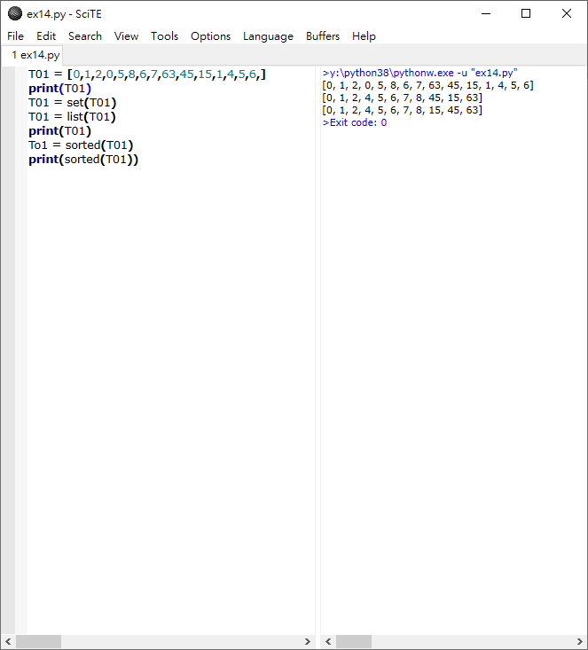

Hw3 <<
Previous Next >> 15.倒序
14.移除重複項
List Remove Duplicates 
Exercise 14 (and Solution)
Write a program (function!) that takes a list and returns a new list that contains all the elements of the first list minus all the duplicates.
Extras:
- Write two different functions to do this - one using a loop and constructing a list, and another using sets.
- Go back and do Exercise 5 using sets, and write the solution for that in a different function.
Discussion
Concepts for this week:
Sets
In mathematics, a set is a collection of elements where no element is repeated. This becomes useful because if you know your data is stored in a set, you are guaranteed to have unique elements.
Features of sets
- Sets are not ordered. This means that there is no “first element” or “last element.” There are just “elements”. You cannot ask a set for it’s “next element”.
- There are no repeat elements in sets.
- You can convert between sets and lists very easily.
In Python
In Python, you make and use a set with the set() keyword. For example:
names = set()
names.add("Michele")
names.add("Robin")
names.add("Michele")
print(names)
And the output will be;
set(['Michele', 'Robin'])
You can do to a set almost anything you can do to a list (except ask for things like “the third element”). See the Python documentation about sets to get a full list of things you can do to sets.
You can convert from a list to a set and a set to a list pretty easily:
names = ["Michele", "Robin", "Sara", "Michele"]
names = set(names)
names = list(names)
print(names)
And the result of this will be:
['Michele', 'Robin', 'Sara']
Ans.
#設一有重複物件的列表
T01 = [0,1,2,0,5,8,6,7,63,45,15,1,4,5,6,]
print(T01)
#用set()使列表轉換集合，並去除重複項，再用list()轉換為列表
T01 = set(T01)
T01 = list(T01)
print(T01)
#用sorted對數字進行排列
To1 = sorted(T01)
print(sorted(T01))

Hw3 <<
Previous Next >> 15.倒序